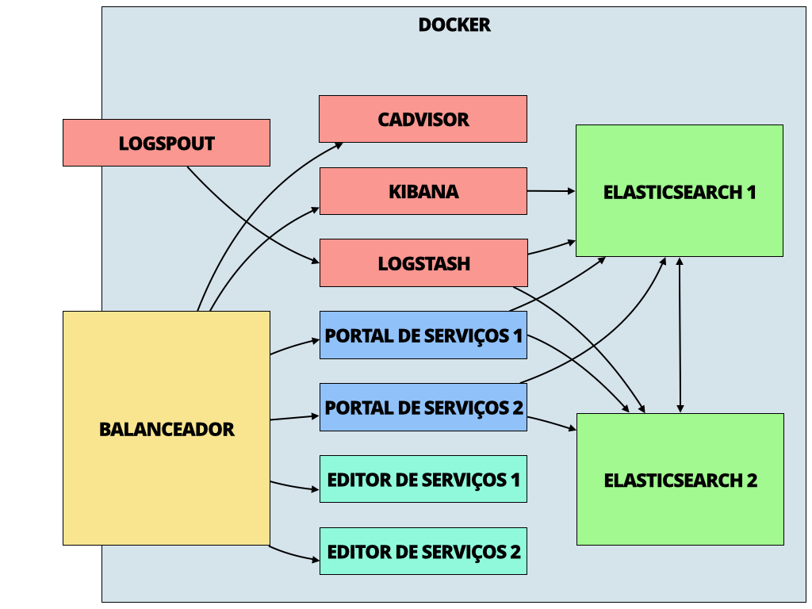
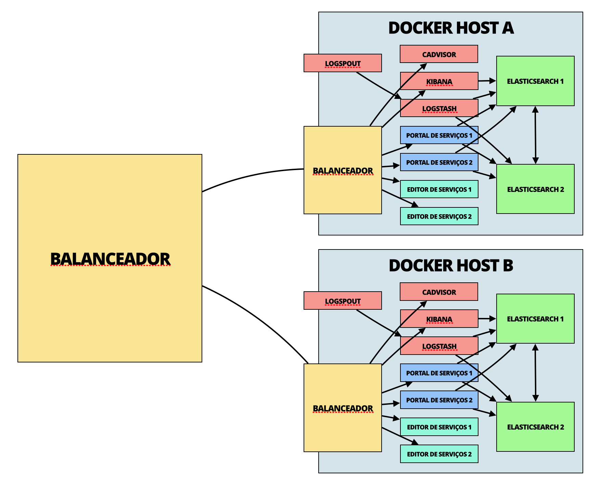

Documento de Implantação
Neste documento estão todas as informações necessárias à implantação e operação do Portal de Serviços e Editor de Serviços em ambientes de, ou similares a, produção.
Infraestrutura

Ambientes Docker
Estes ambientes contém uma máquina virtual com as seguintes aplicações Docker:
- Portal de Serviços
- Editor de Serviços
- Postgres
- ElasticSearch
Estas estão definidas na configuração, em formato Docker-Compose, do repositório relacionado.
Portas e firewalls
Todo o tráfego deve ser direcionado a estas portas:
- 80/tcp (HTTP): Tráfego para o Portal de Serviços (
/*) e Editor de Serviços (/editar/*)
Portas internas
Estas são as portas utilizadas internamente para comunicação entre contêineres:
| Origem | Destino | Portas | Notas |
|---|---|---|---|
| Portal de Serviços | ElasticSearch | 9300/tcp | |
| Portal de Serviços | Postgres | 5432/tcp | |
| Editor de Serviços | Postgres | 5432/tcp |
Volumes externos
Os seguintes arquivos e diretórios são disponibilizados da máquina host para os contêineres:
| Contêiner | Volume | Backup? | Notas |
|---|---|---|---|
| Editor de Serviços | /root/.ssh | Sim | Chave SSH para publicação no Github, somente leitura |
| ElasticSearch | /usr/share/elasticsearch/es1/data | Sim | |
| Postgres | /var/lib/postgresql/data | Sim |
Configuração
Tanto o Portal quanto o Editor de Serviços utilizam variáveis de ambiente para configuração. Todas elas têm valores padrão, e algumas são redefinidas na configuração dos contêiners usando o Docker-Compose (mais especificamente, através da diretiva environment dos arquivos docker-compose.yml do Portal e do Editor).
Os arquivos que listam as configurações padrão são:
- Portal de Serviços:
scripts/portal-de-servicos.default.config - Editor de Serviços:
scripts/editor-de-servicos.default.config
Acessos e Conexões
Através de acordos técnicos e conversas com os responsáveis pela infraestrutura do Ministério do Planejamento, as seguintes regras acessos de firewall foram definidas como essenciais para garantir a interoperabilidade do Portal de Serviços:
Acessos que devem estar liberados na entrada das máquinas de Desenvolvimento e Produção
| Desenvolvimento (189.9.150.163) | Produção (189.9.151.72) | |
|---|---|---|
| Internet | 80, 443 | 80, 443 |
| Ministério do Planejamento | 22, 80, 443, 8080, 5601 | 80, 443, 8080, 5601 |
Acessos que devem estar liberados na saída das máquinas de Desenvolvimento e Produção
| Servidor Git (192.30.252.0/22) | |
|---|---|
| Desenvolvimento (189.9.150.163) | 22, 80, 443 |
| Produção (189.9.151.72) | 22, 80, 443 |
Checklist de Implantação
Primeira instalação
Todos os comandos a seguir devem ser executados como super-usuário (root), e presumem uma máquina [CentOS] 7 64bit, sem nenhuma configuração adicional efetuada. As versões do CentOS utilizadas para homologação foram: 7.1 e 7.2. Além disso, ser 64bit é realmente necessário, pois é a única plataforma suportada pelo Docker na arquitetura X86.
Configuração Inicial
- Verifique que o kernel instalado é, no mínimo, 3.10, rodando em modo x64:
uname -r
3.10.0-229.el7.x86_64
Caso contrário, é preciso realizar as atualizações necessárias antes de continuar.
- Desabilite o SELinux temporariamente:
setenforce 0
- Instale o Docker:
curl -sSL https://get.docker.com | sh
- Crie os volumes de dados e metadados do Docker:
pvcreate /dev/sdb1
vgcreate vg-docker /dev/sdb1
lvcreate -L 7G -n data vg-docker
lvcreate -L 2G -n metadata vg-docker
- Inicie o serviço do Docker:
systemctl start docker
- Verifique que o serviço do Docker inicializou corretamente:
docker info
O comando acima deve produzir saída contendo texto similar ao seguinte:
Containers: 0
Running: 0
Paused: 0
Stopped: 0
Images: 0
Server Version: 1.10.2
Storage Driver: devicemapper
Pool Name: docker-253:1-124711-pool
Pool Blocksize: 65.54 kB
Base Device Size: 10.74 GB
Backing Filesystem: xfs
Data file: /dev/vg-docker/data
Metadata file: /dev/vg-docker/metadata
Data Space Used: 2.989 GB
Data Space Total: 8.59 GB
Data Space Available: 5.601 GB
Metadata Space Used: 7.025 MB
Metadata Space Total: 1.074 GB
Metadata Space Available: 1.067 GB
Udev Sync Supported: true
Deferred Removal Enabled: false
Deferred Deletion Enabled: false
Deferred Deleted Device Count: 0
Library Version: 1.02.107-RHEL7 (2015-12-01)
(note os nomes do Data file e Metadata file, que são os volumes LVM criados no passo anterior.)
- Verifique que o Docker consegue baixar e instanciar contêineres:
docker run alpine echo "olá"
O comando acima deve produzir saída similar à seguinte:
Unable to find image 'alpine:latest' locally
latest: Pulling from library/alpine
31f630c65071: Already exists
library/alpine:latest: The image you are pulling has been verified. Important: image verification is a tech preview feature and should not be relied on to provide security.
Digest: sha256:c471fce1d08618adf4c6c0d72c047b9f3d5ef82cae0ca9a157ce1c800d42722f
Status: Downloaded newer image for alpine:latest
olá
- Configure o serviço do Docker para inicializar durante o boot:
chkconfig docker on
- Instale o Docker-Compose:
curl -L https://github.com/docker/compose/releases/download/1.4.0/docker-compose-`uname -s`-`uname -m` > /usr/bin/docker-compose
chmod +x /usr/bin/docker-compose
- Verifique a instalação do Docker-Compose
docker-compose version
O comando acima deve produzir saída similar à seguinte:
docker-compose version 1.4.0, build 4d72027
docker-py version: 1.7.2
CPython version: 2.7.11
OpenSSL version: OpenSSL 1.0.2g 1 Mar 2016
- Instale o Git:
yum install -y git
O comando acima deve produzir saída similar à seguinte:
...
Installed:
git.x86_64 0:1.8.3.1-4.el7
...
Clone Repositório Docker
- Clone o repositório servicosgovbr/editor no diretório
/root: - Clone o repositório servicosgovbr/portal no diretório
/root:
cd /root
git clone https://git.planejamento.gov.br/sti/portal-servicos-editor-de-servicos
git clone https://git.planejamento.gov.br/sti/portal-servicos
Redirecionando de tráfego
É possível que o ambiente em que a instalação esteja sendo realizada possua restrições de firewall. Algumas das restrições que enfrentamos anteriormente, em ambiente do governo, foram restrições de tráfego na porta 22 para o GitHub. Nesse caso, sugere-se uma solução de contorno. Essa solução de contorno irá redirecionar todo o tráfego da porta 22 para a porta 443. Considera-se que a porta 443 não possua restrições, e que esse tipo de redirecionamento seja permitido na infra-estrutura em que está sendo realizada a instalação.
Para isso, a seguinte alteração é necessária no arquivo /root/.ssh/config:
Host github.com
Hostname ssh.github.com
Port 443
O código acima deve ser adicionado no arquivo config. Caso o arquivo não exista, sugere-se a criação do arquivo. Maiores informações podem ser encontradas na documentação oficial do Github.
Para testar a conexão e aceitar o certificado de acesso, utilize o seguinte comando:
ssh -T git@github.com
O resultado esperado é a seguinte mensagem:
You've successfully authenticated, but GitHub does not provide shell access.
Chaves SSH
Para o correto funcionamento do Editor de Serviços, os seguintes passos são necessários:
- Criar uma nova chave SSH, conforme página de SSH Keys do GitHub. A chave criada não deve conter nenhum tipo de passphrase. Sugere-se que essa chave seja associada a um e-mail válido de uma conta existente no GitHub e que o usuário esteja autorizado a acessar os projetos da organização do servicos.gov.br.
- Colocar essa chave na pasta
/root/.ssh. - Importar chave com permissão de leitura e escrita no repositório de
cartas-de-servicos. Detalhes sobre esse processo podem ser encontrados na nota abaixo, ou na página de Deploy Keys do GitHub. A chave importada deve ser utilizada exclusivamente no repositório de cartas. Caso a chave for utilizada em algum outro lugar, uma mensagem de erro será exibida.
Notas:
É importante que o usuário que irá realizar a operação de importação tenha as devidas permissões no repositório cartas-de-servico do GitHub. Caso o usuário não tenha permissões suficientes, é necessário contactar os administradores do repositório.
Caso, não for possível encontrar o repositório que a chave deve ser importada, acessar o seguinte repositório no GitHub. Estando na página do repositório, os seguintes passos devem ser realizados:
- Clicar em "Settings"
- No lado direto inferior da interface, clicar em "Deploy Keys"
- Clicar em "Add Deploy Key"
- Criar um nome para a nova chave, no campo "Title"
- Inserir o conteúdo da chave pública criada anteriormente no campo "Key"
- Selecionar a opção "Allow write access"
- Clicar no botão "Add Key" para adicionar a chave
Para visualizar as chaves de deploy você pode acessar o seguinte link.
Utilizando variáveis de ambiente
Antes de inicializar os contêineres, é necessário que as seguintes variáveis de ambiente sejam configuradas para a instalação inicial:
export EDS_CARTAS_REPOSITORIO='git@github.com:servicosgovbr/cartas-de-servico.git'export PDS_CARTAS_REPOSITORIO='https://github.com/servicosgovbr/cartas-de-servico.git'
Para habilitar robôs de busca, configurar a seguinte variável de ambiente:
export FLAGS_PERMITIR_ROBOS='true'
Após executar esses comandos, precisamos persistir os valores das váriaveis. Devemos criar um arquivo em /etc/profile.d/repositorios.sh com o seguinte conteúdo:
export EDS_CARTAS_REPOSITORIO='git@github.com:servicosgovbr/cartas-de-servico.git'
export PDS_CARTAS_REPOSITORIO='https://github.com/servicosgovbr/cartas-de-servico.git'
export PDS_PIWIK_ENABLED='true'
export PDS_PIWIK_SITE=2
export PDS_PIWIK_URL="https://estatisticas.presidencia.gov.br/"
export PDS_PIWIK_TOKEN=''
export FLAGS_PERMITIR_ROBOS='true'
export PORTAL_URL='http://servicos.nuvem.gov.br'
export EDITOR_URL='http://servicos.nuvem.gov.br'
export CAPTCHA_KEYS_SITE='6LfHRQwUAAAAACGReFwiW-fQ_fR78WQYXagi_sBR'
export CAPTCHA_KEYS_SECRET='6LfHRQwUAAAAAES36H-lRrPUPlZNAP5hyFU2KsI3'
export MAIL_REMETENTE='governodigital@planejamento.gov.br'
export MAIL_SUBJECT='Recuperar acesso'
Ressaltamos que para acessar o TOKEN entrar em contato com a Coordenação-Geral de Dados e Serviços Públicos Digitais.
Construindo os Contêineres
Construa e rode os contêineres:
cd /root/portal-servicos-editor-de-servicos/docker/docker-compose-builder
./run buildDockerfiles prod editor <Versão>
cd /root/portal-servicos/docker/docker-compose-builder
./run buildDockerfiles prod portal <Versão>
cd /root/portal-servicos/docker/docker-compose-builder/docker-compose
docker-compose up -d
Versão: versão que será criado a imagem do Docker
A instalação está concluída.
Restaurando o Repositório Local
Os passos dessa seção devem ser seguidos apenas se a máquina utilizada para implantação já possui a configuração inicial e uma instalação prévia realizada.
- No repositório local servicosgovbr/editor e servicosgovbr/portal, pare e remova os contêineres:
docker stop $(docker ps -a -q)
docker kill $(docker ps -a -q)
- Reinicie o Docker:
systemctl restart docker
Remova os repositórios local servicosgovbr/portal e servicosgovbr/editor
Clone o repositório servicosgovbr/editor no diretório
/root:- Clone o repositório servicosgovbr/portal no diretório
/root:
cd /root
git clone https://git.planejamento.gov.br/sti/portal-servicos-editor-de-servicos
git clone https://git.planejamento.gov.br/sti/portal-servicos
O certificado digital deverá ser instalado novamente na pasta do
docker, conforme instruções da seção "Certificado Digital SSL"Construa e rode os contêineres:
cd /root/portal-servicos-editor-de-servicos/docker/docker-compose-builder
./run buildDockerfiles prod editor <Versão>
cd /root/portal-servicos/docker/docker-compose-builder
./run buildDockerfiles prod portal <Versão>
cd /root/portal-servicos/docker/docker-compose-builder/docker-compose
docker-compose up -d
Versão: versão que será criado a imagem do Docker
Atualizações posteriores
Todos os comandos a seguir devem ser rodados como super-usuário (root), e presumem uma máquina [CentOS] 7 64bit, que já tem os contêineres Docker rodando.
- Atualize os repositórios servicosgovbr/portal e servicosgovbr/editor no diretório
/root/:
cd /root/portal-servicos-editor-de-servicos
git pull
cd /root/portal-servicos
git pull
- Parar os contêineres:
cd /root/portal-servicos/docker/docker-compose-builder/docker-compose
docker-compose stop
- Baixe as novas imagens:
cd /root/portal-servicos/docker/docker-compose-builder/docker-compose
docker-compose pull
- Rode os contêineres:
cd /root/portal-servicos/docker/docker-compose-builder/docker-compose
docker-compose up -d
- Verifique que os contêineres estão executando corretamente:
docker-compose ps
O comando acima deve produzir saída similar à seguinte:
Name Command State Ports
-------------------------------------------------------------------------------------------------------------------------
editor1 /bin/sh -c sh /run.sh Up 8090/tcp
es1 /docker-entrypoint.sh elas ... Up 9200/tcp, 9300/tcp
portal1 /bin/sh -c sh /run.sh Up 8080/tcp
postgres /docker-entrypoint.sh postgres Up 5432/tcp
Você pode verificar o log dos contêineres utilizando o seguinte comando:
docker-compose logs
A instalação está concluída.
Se a atualização não for bem sucedida, o seguinte comando poderá ser executado, no diretório padrão do Docker, como solução de contorno:
./scripts/volta_estado_inicial.
Esse script irá apagar todos os contêineres e imagens locais do Docker. Imagens contendo as últimas versões do ambiente serão obtidas da Internet. Além disso, o ambiente será construído de maneira automática novamente.
Lembrete: Antes de executar o comando acima, é muito importante que um backup válido dos usuários e permissões exista. Caso contrário, todos os usuários criados para aquele ambiente serão perdidos. Maiores informações sobre como proceder com a criação de um backup podem ser encontradas na seção de Backup (Usuários e Permissões).
Problemas conhecidos
Alterações na rede, firewall ou iptables
O Docker necessita ser reiniciado quando uma mudança estrutural ou de configuração de redes é realizada na máquina host.
Presumindo uma máquina [CentOS] 7 64bit, que já possui os contêineres Docker rodando, recomendamos que os seguintes comandos sejam executados:
- No repositório local servicosgovbr/docker, pare e remova os contêineres:
docker stop $(docker ps -a -q)
docker kill $(docker ps -a -q)
- Reinicie o Docker:
systemctl restart docker
- Inicie os contêineres novamente:
docker-compose up -d
O comando acima deve produzir saída similar à seguinte:
Creating cadvisor...
Creating editor2...
Creating editor1...
Creating es2...
Creating es1...
Creating logstash...
Creating logspout...
Creating portal2...
Creating kibana...
Creating portal1...
Creating balanceador...
Lembrete: Antes de executar os passos descritos acima, é muito importante que um backup válido dos usuários e permissões exista. Caso contrário, todos os usuários criados para aquele ambiente serão perdidos. Maiores informações sobre como proceder com a criação de um backup podem ser encontradas na seção de Backup (Usuários e Permissões).
Backups
Backups devem ser feitos dos seguintes caminhos:
| Caminho | Incremental? |
|---|---|
| /root/.ssh | Não |
| /usr/share/elasticsearch/es1/data | Sim |
| /usr/share/elasticsearch/es2/data | Sim |
| /var/log/*/ | Sim |
| /var/lib/postgresql/data | Sim |
A retenção dos mesmos pode variar dependendo do ambiente. Recomenda-se ao menos 30 dias.
Usuários e Permissões
Para efetuar o backup dos dados do banco de dados que dá suporte à aplicação, contidos no NFS SERVER, é necessário realizar os seguintes passos:
- Compactar a pasta
/exportsonde está localizado os dados do banco no servidor do NFS SERVER - Esse servidor deve ter uma pasta
/exportscompartilhada com o sistema - Executar comando para realizar o backup a pasta
/exportsno servidor do NFS SERVER preservando as permissão de usuários e grupo da pasta:rsync -av /exporte.$(date '+%d_%m_%y_%H_%M')
Para recuperar os dados a partir de um backup:
mv exporte.data-atual /exports
Recomenda-se que o backup dos dados dos usuários seja efetuado diariamente por uma rotina automática. Considerando que o volume de dados armazenados será pequeno, o armazenamento diário não deverá ser um problema. Além disso, recomenda-se que os backups mais antigos que sete dias sejam descartados automaticamente. Essa rotina de deleção automática deverá ser executada somente se backups dos últimos sete dias existirem de fato.
Atenção: recomenda-se que o backup seja armazenado em um volume externo da máquina host do Docker.
Monitoramento
A monitoração da saúde do host é feita de maneira externa, utilizando Nagios. Para o monitoramento das instâncias da aplicação e ElasticSearch, com informações mais detalhadas, as seguintes opções estão disponíveis:
Portal de Serviços
O Portal de Serviços disponibiliza informações de saúde através do endereço /health, que retorna JSON similar ao seguinte:
{
"status": "UP",
"portalDeServicosIndex": {
"status": "UP",
"portal-de-servicos": "ok (622 docs)"
},
"elasticSearch": {
"status": "GREEN",
"nodes": 3,
"node-0": "es1",
"node-1": "logstash-d9ccaa4d20c4-1-11624",
"node-2": "es2"
},
"cache": {
"status": "UNKNOWN"
},
"diskSpace": {
"status": "UP",
"free": 17378258944,
"threshold": 10485760
}
}
Nele, é possível ver o estado geral da aplicação (status), do índice no ElasticSearch (portalDeServicosIndex), informações de conexão ao ElasticSearch (elasticsearch), do estado do cache interno de páginas (cache) e espaço em disco (diskSpace).
Editor de Serviços
O Editor de Serviços disponibiliza informações de saúde através do endereço /editar/health, que retorna JSON similar ao seguinte:
{
"status": "UP",
"diskSpace": {
"status": "UP",
"free": 17378254848,
"threshold": 10485760
}
}
Nele, é possível ver o estado geral da aplicação (status) e do espaço em disco (diskSpace).
Escalabilidade
É possível aumentar a capacidade de carga do sistema de duas maneiras:
Aumentando a capacidade do servidor (vertical)
Servidores estão atualmente provisionados de acordo com a seção "Implantação e execução". Para adicionar mais capacidade, é necessário revisar as configurações pertinentes e analisar a performance total novamente (ver: "Performance").
Aumentando a quantidade de servidores (horizontal)
Para adicionar um servidor de aplicação, será necessário:
- Dar um novo IP externo ao host Docker
- Criar um balanceador de carga com o IP externo anterior (ao qual o servicos.gov.br aponta)
- Configurar o balanceador de carga criado para redirecionar tráfego ao host Docker
- Criar novas instâncias do host Docker, idênticas, conforme necessário
- Adicioná-las ao balanceador de carga criado no passos anteriores
Ao fim destes passos, a arquitetura deverá seguir o diagrama abaixo:
